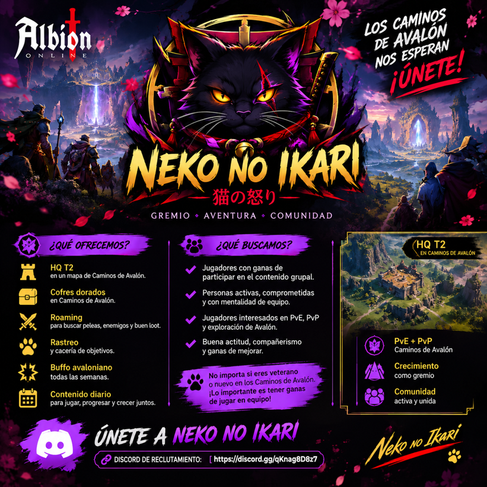

↙ MEJOR COMPRA Venta mínima
—
—
Esperando precios
Compara precios, calcula ganancias y prepara tu próxima ruta comercial en Albion Online.
Órdenes observadas en los mercados de Albion
| CIUDAD | VENTA MÍNIMA Para comprar | COMPRA MÁXIMA Para vender | ACT. VENTA | ACT. COMPRA |
|---|
Los precios son observaciones de la comunidad. Comprueba su antigüedad antes de comerciar; no garantizan disponibilidad ni volumen.
Somos un gremio de Albion Online que explora los Caminos de Avalón en equipo. Nuestra base es un cuartel general de nivel 2 (HQ T2) en los Caminos.
Cofres dorados, rastreo y cacería de objetivos en los Caminos.
Salidas en grupo para buscar peleas y botín.
Actividades diarias y buff avaloniano semanal.
Buscamos jugadores activos y con ganas de participar. Si recién conoces Avalón, también puedes sumarte.
Discord de reclutamiento